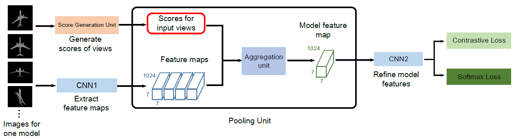

|
Learning Discriminative 3D Shape
Representations by View Discerning Networks
(Kai Xu is the corresponding author.) 
Abstract: In view-based 3D shape recognition, extracting discriminative
visual representation of 3D shapes from projected images is
considered the core problem. Projections with low discriminative ability
can adversely influence the final 3D shape representation. Especially
under the real situations with background clutter and object occlusion,
the adverse effect is even more severe. To resolve this problem, we
propose a novel deep neural network, View Discerning Network, which
learns to judge the quality of views and adjust their contributions to
the representation of shapes. In this network, a Score Generation Unit
is devised to evaluate the quality of each projected image with score
vectors. These score vectors are used to weight the image features
and the weighted features perform much better than original features
in 3D shape recognition task. In particular, we introduce two structures
of Score Generation Unit, Channel-wise Score Unit and Part-wise Score
Unit, to assess the quality of feature maps from different perspectives.
Our network aggregates features and scores in an end-to-end framework,
so that final shape descriptors are directly obtained from its output.
Our experiments on ModelNet and ShapeNet Core55 show that View
Discerning Network outperforms the state-of-the-arts in terms of the
retrieval task, with excellent robustness against background clutter and
object occlusion.
|